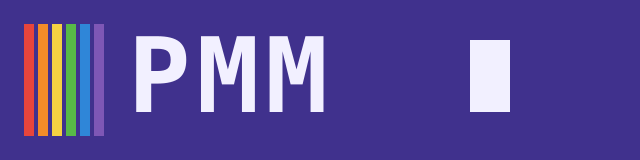
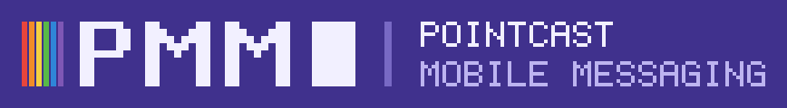
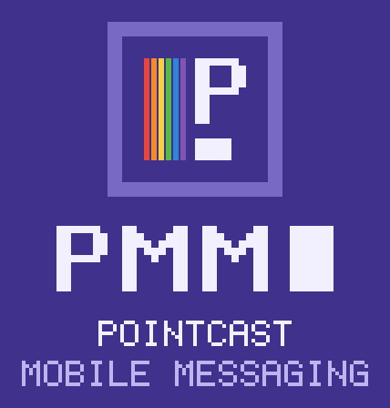
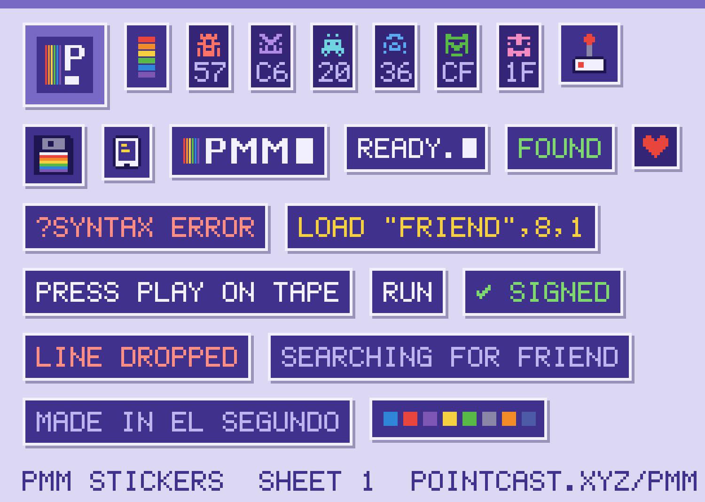

POINTCAST.XYZ / PMM / BRAND · V2
PMM — PointCast Mobile Messaging
READY.

1. The idea
Two machines that liked you. The Atari 2600 said press start and gave you a rainbow. The Commodore 64 said READY. and waited. PMM is a messenger with that manner: it waits for you, it says very little, and when it does the words are in uppercase and the stripes are on.
The brand is not a costume on a modern app. The dark blue screen is the chat. The stripes are the only accent. The prompts are the UI copy. If a screen needs more than that, it is probably wrong.
2. Logo system
The wordmark is drawn, not typed: every letter sits on a pixel grid, two cells per stem, nine cells tall. It has three parts that always appear in this order: six Fuji stripes, the letters PMM, and a full-cell block cursor three cells clear of the last M. The cursor blinks only where the medium can (the SVG on this page); in print and PNG it is solid.





Also: wordmark, transparent · wordmark, one colour (field blue, for stamps, engraving, one-ink print).


Clear space

Keep three grid cells clear on every side. A cell is one stripe's column, so three cells is one and a half P stems (the dashed line above). Every SVG in logo/ already has that margin built in, so place the file edge to edge and nothing will crowd it.
Minimum size
| ARTWORK | SMALLEST | WHY |
|---|---|---|
| Wordmark | 18 px tall (2 px per cell) | Below that the stripes merge and the M's notch closes. |
| Horizontal lockup | 36 px tall | The tagline is a half-cell font; it needs 2 px per pixel to read. |
| Mark | 32 px | Below 32 px use pmm-mark-16.svg: stripes and cursor, no P. |
| 12 mm wordmark width | Same 2-dots-per-cell rule at 300 dpi, with margin for ink spread. |
Scale only by whole numbers where you can (1×, 2×, 3×) and set image-rendering: pixelated on any raster copy, so pixels stay square.
3. Sigils
Every person is a keypair minted on their phone. The first eight hex characters of the key's SHA-256 fingerprint are four bytes, and those four bytes make three things, all from one pure function (sigil.js):
- Glyphs. The low nibble of each byte picks one of sixteen PETSCII-style glyphs:
▌ ▐ ▀ ▄ █ ▖ ▗ ▘ ▝ ▚ ▞ ░ ▒ ▓ ● ◆. Exactly what the app shows today. - Colour. The four bytes XORed together, low three bits, pick one of eight sigil colours. Each clears 3:1 against both blues and 4.5:1 against the sigil tile.
- Sprite. All 32 bits fill a 4 × 8 half-grid, row by row, then mirror into an 8 × 8 sprite, like a C64 sprite or a space invader. Symmetry makes it read as a face.
The sigil is the avatar, the ID and the trust check: read the glyphs or the hex aloud to each other, then tap VERIFY.
| INDEX | SIGIL COLOUR (SHOWN ON --field-2) | ON --field | ON --field-2 |
|---|
The twelve examples are hashes of "pmm sigil example N", not anyone's key.
4. Tokens
Everything below is a CSS custom property in /pmm/style.css, and the same values are in tokens.json for agents and build tools.
Moods are not tokens; each message carries one. calm #2F86D8 · hyped #E8453C · soft #7E57B5 · sunny #F5D142 · salty #58B947 · tired #8A86A8 · curious #F28C28 · low #4B5BA6. They are borders and washes, never text. A wash is at most 30% over the field, so ink on it stays above 4.5:1 even for sunny. Each mood's glyph, tune and meaning, and the atmosphere line, are in the Mood Atlas.
Type tokens
| TOKEN | VALUE | USE |
|---|---|---|
--mono | ui-monospace, "SF Mono", Menlo, Consolas, "DejaVu Sans Mono", monospace | Everything. No webfont: the system monospace is the bitmap font now. |
| body | 16px / 1.4 | What people write. 16px so phones never zoom the input. |
| key | 13px 700 · uppercase · .08em | Buttons. |
| label | 12px 700 · uppercase · .14em | Section labels, prompts. |
| meta | 10px · uppercase · .1em | Under bubbles: time, mood, status. |
| pixel | 5 × 7 cells, drawn as SVG rects | Logos, stickers and icons only. Never live text. |
Contrast, checked
Every text pair PMM ships, on its real ground (flat fields, and the worst mood tint where text sits on one), against WCAG 2.2 AA: 4.5:1 for body and small text, 3:1 for large text and for graphics that carry meaning. Ratios are rounded down. tests/pmm-brand.test.mjs recomputes each row and fails the build if one drops.
| TEXT | ON | WHERE | RATIO | NEEDS |
|---|---|---|---|---|
| --ink | --field | body text, keys | 9.14 | 4.5 |
| --ink | --field-2 | inputs, their bubbles | 11.10 | 4.5 |
| --ink | --panel | my bubbles | 7.86 | 4.5 |
| --ink-2 | --field | labels, hints, meta | 5.36 | 4.5 |
| --ink-2 | --field-2 | placeholders | 6.50 | 4.5 |
| --ink-2 | --panel | small print in my bubbles | 4.60 | 4.5 |
| --r3 | --field | links, codes, ticker | 6.89 | 4.5 |
| --r3 | --panel | links in my bubbles | 5.92 | 4.5 |
| --err | --field | ?ERROR lines, danger and record keys | 4.66 | 4.5 |
| --ok | --field | ok text on flat --field | 5.85 | 4.5 |
| #FFFFFF | --badge | unread count | 5.47 | 4.5 |
| --field | --ink | toasts | 9.14 | 4.5 |
| --ink | sunny 30% wash | mood chip, atmosphere bar (worst mood) | 4.99 | 4.5 |
| --ink-2 | sunny 8% chat tint | meta lines (time, ✓ sent), day marks, system lines (worst mood) | 4.63 | 4.5 |
| --r3 | sunny 8% chat tint | ✓✓ read (worst mood) | 5.95 | 4.5 |
| --err | --field-2 | UNVERIFIED, FAILED · KEPT HERE: a field-2 chip in the meta line | 5.65 | 4.5 |
| --ok | --field-2 | SIGNED, SENT TO THE DESK: a field-2 chip in the meta line | 7.10 | 4.5 |
| --ink | --border | large text only (≥ 24px, or 19px bold) | 4.04 | 3 |
| --r4 | --field | online dot (graphic) | 4.13 | 3 |
Fixed in v2. Three pairs failed and now use the new tokens: Fuji red text on the field (2.62:1: danger keys, record key, UNVERIFIED and FAILED labels), Fuji green SIGNED labels (4.13:1, fine as a dot, short as 10px text) and white on the Fuji red badge (3.93:1). Ink-2 on a 40% mood wash dropped to 2.36:1 under sunny, so the atmosphere bar now uses ink on a 30% wash, and chosen moods carry the ink outline rather than a heavier wash. The chat's mood tint went from 14% to 8%, so ink-2 meta text stays above 4.5:1 under sunny, and SIGNED, UNVERIFIED and the desk's SENT/FAILED status sit on a field-2 chip.
5. Voice and tone
Short. Dry. A machine that likes you. The app speaks in the system lines of a 1982 home computer, then says the fix in plain words on the next line. Errors start with a question mark, the way the C64 did. Nothing is cute twice.
| MOMENT | SAY | NEVER SAY |
|---|---|---|
| Idle | READY. | Welcome back! |
| Start a connection | LOAD "FRIEND",8,1 · PRESS PLAY ON TAPE | Invite a contact |
| Waiting | SEARCHING FOR FRIEND | Connecting… |
| Connected | FOUND · LOADING · RUN | You're all set |
| Bad code typed | ?SYNTAX ERROR + SIX LETTERS, NO SPACES. | Invalid input |
| Peer gone | ?DEVICE NOT PRESENT ERROR + what to do | Oops, something went wrong |
| Link expired | ?FILE NOT FOUND ERROR + MAKE A NEW LINK. | This link is no longer valid |
| Keys don't match | SIGIL MISMATCH. LINE CLOSED. | Security warning!! |
| Leaving | ESC · LINE DROPPED | Are you sure you want to leave? |
| Signature | MADE IN EL SEGUNDO. | © all rights reserved |
?SYNTAX ERROR then SIX LETTERS, NO SPACES. One machine line, one human line.?SYNTAX ERROR IN 10 with no fix. A joke without the fix is just an error.NO RELAY YET. STRICT NETWORKS MAY NOT CONNECT.READY. and nothing else when nothing is happening.To people, and to agents
PMM has two readers. A person reads the screen; an agent (the Desk, Claude Code, anything reading an SI packet or tokens.json) reads the wire. They get different registers, and neither borrows the other's.
| TO A PERSON | TO AN AGENT | |
|---|---|---|
| Register | The machine voice: uppercase chrome, BASIC lines, then the fix. | Plain, exact, lowercase keys. No jokes in a field, no ?ERROR theatre. |
| Time | 9:41 PM, their own clock | ISO 8601 with zone: 2026-10-23T04:41:00.000Z, plus the IANA zone |
| Identity | Sigil glyphs and 8 hex, read aloud | Full fingerprint and public key, plus the signature and what it signs |
| Mood | A colour wash and a word | mood: sunny, one of eight fixed values |
| Failure | ?DEVICE NOT PRESENT ERROR + what to do | A status code and a reason string an agent can branch on |
| Who wrote it | Their name and sigil | Say whether a person typed it or software composed it. Never put words in Mike's voice that Mike did not write. |
6. Keys and bubbles
Buttons are keys: a two-pixel border, a three-pixel hard shadow, and they press down two pixels when tapped. Nothing is rounded.
LOAD "FRIEND",8,1RUNJOIN WITH CODECLEAR ALLMine: the panel with the six stripes down the left edge. Theirs: field-2 with a light blue border. Under each bubble, a meta line in 10px uppercase: time, mood, and one of ✓ sent, ✓✓ read, SIGNED, UNVERIFIED.
7. Stickers and icons

Home-screen icon variants. All four keep their art inside the central 80%, so they survive any mask. The live app keeps its current manifest icons; these are the set to choose from.


Each comes as SVG and as 180 (apple-touch), 192 and 512 PNG in /pmm/brand/icons/.
8. Sound and motion
Two square-wave notes: up for send (440 then 660 Hz), down for receive. Off until the first tap, toggle in SET. Motion is stepped, not eased: three frames for a bubble, four for a sheet. Cursors blink at 1 Hz. Reduced-motion turns all of it off.
9. Do and don't
- Do keep the screen dark blue and the border light blue. That pair is the brand.
- Do use the rainbow once per screen, as a stripe, never as a wash.
- Do use the Fuji colours as stripes and graphics; use
--errand--okwhen the colour is text. - Do write errors as the machine would, then say the fix.
- Don't add a bitmap webfont. Pixel lettering is artwork, drawn once in SVG.
- Don't round corners. Nothing here is rounded (home-screen masks are the phone's doing, not ours).
- Don't redraw the wordmark in a font, stretch it, recolour single letters, or drop the cursor.
- Don't put small text on
--border; it is 4.04:1, large text only.
10. Files
- Logo: wordmark.svg · pmm-wordmark.svg · pmm-wordmark-mono.svg · pmm-lockup-horizontal.svg · pmm-lockup-stacked.svg · pmm-mark.svg · pmm-mark-16.svg
- Sigils: sigil.js (ES module, no dependencies) · sigils.svg
- Tokens: tokens.json · /pmm/style.css
- Stickers and icons: sticker-sheet.png · classic · ready · fuji · paper (each also as -180, -192 and -512 PNG)
- All artwork is generated by
scripts/pmm-brand.mjsin the PointCast repo; brand plate prompts are inscripts/plates/batch/pmm-brand.json. Product brief:docs/prd/pointcast-mobile-messaging.md.


MADE IN EL SEGUNDO, OCTOBER 2026. — MIKE